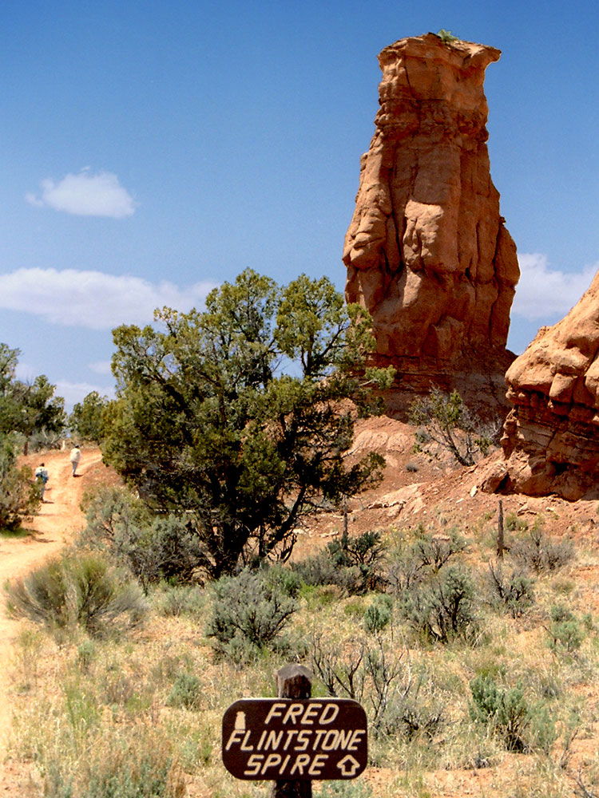
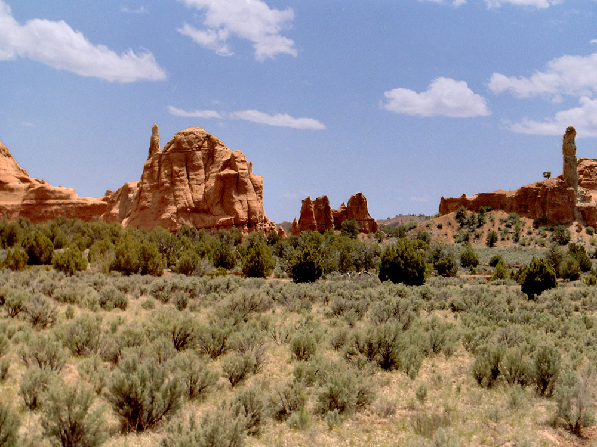
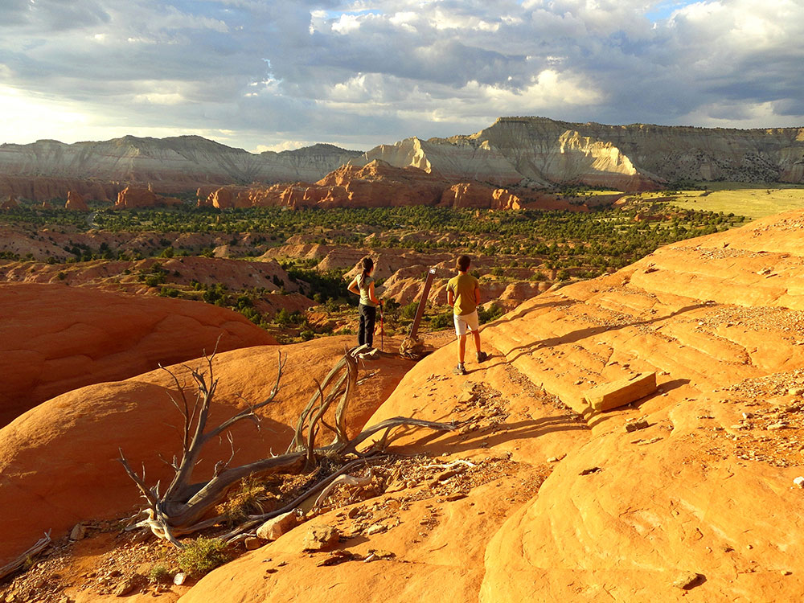
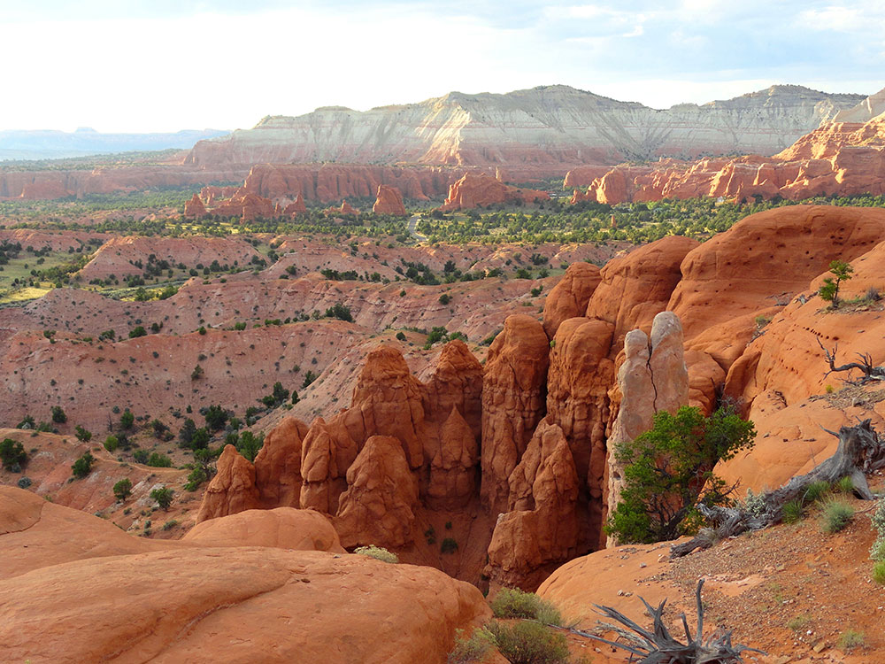

-400.jpg)
.jpg){kind=link}
State Park featuring sandstone spires and columns called sand pipes, believed to be found nowhere else on earth
How to Get There
From Bryce Canyon National Park (22 mi): Head north on UT-63 N toward FR 090/Great Western Trail. At the traffic circle, take the 1st exit onto UT-12. Turn right onto Kodachrome Rd/Main St. Continue onto Cottonwood Canyon Rd. Turn left onto Kodachrome State Park Rd.
Overview
Kodachrome Basin State Park sits at about 5,800 feet, roughly 20 miles southeast of Bryce Canyon National Park, and is known for its colorful basin of 67 sandstone spires called sedimentary or "sand pipes," the hardened remains of old geyser-like vents. A National Geographic Society expedition photographed and named the area Kodachrome Flat in 1948 after the vivid Kodak film, and the area was designated a Utah state park in 1962. Visitors come for the contrast of red, pink and white cliffs with the rock pipes, for short hikes among the formations, for horseback rides and mountain biking, and for dark night skies. The park lies along the Cottonwood Canyon Road corridor near Grand Staircase-Escalante National Monument.
Access
Kodachrome Basin is in Kane County, in south-central Utah, about 12 miles south of Highway 12 near the small town of Cannonville. The main access is a paved road from Cannonville that leads directly to the park, and it is easy for any vehicle. Tropic, the closest town with hotels, is about 12 miles away, and Bryce Canyon is roughly 20 miles away. A dirt road continues south through the monument toward Page, Arizona, but its condition varies and it can become impassable when wet, so check with the Bureau of Land Management before using it. There is no public transportation, so plan to arrive by car with fuel and supplies.
Seasons
The park is open year-round, with spring and fall offering the most comfortable temperatures for hiking at about 5,800 feet. Summer days can be hot, and afternoon thunderstorms are possible in July and August, when dirt roads and washes can become hazardous. Winter brings cold nights and occasional snow, which can dust the red rock for striking photographs, and the park is much quieter. The campground is busiest in late spring through fall, and the sky is dark and clear most of the year, with the best stargazing on moonless nights. Check Utah State Parks for any seasonal changes to facilities and hours.
Things to Do
Explore a Unique Landscape of Sand Pipes and Colorful Cliffs
Kodachrome Basin State Park is one of southern Utah's hidden gems, located near Bryce Canyon National Park and Grand Staircase-Escalante National Monument. The park is famous for its dramatic red-rock scenery, towering sandstone spires known as sedimentary pipes, colorful cliffs, and exceptional opportunities for hiking, photography, and stargazing.
Discover the Park's Famous Sand Pipes
Kodachrome Basin contains more than 60 towering sedimentary pipes, some rising over 150 feet above the desert floor. These rare geological formations create a striking landscape unlike anywhere else in Utah and inspired National Geographic explorers to name the area after Kodak's vibrant Kodachrome color film.
Experience Southern Utah's Dark Skies
Kodachrome Basin is recognized as an International Dark Sky Park, offering excellent conditions for stargazing and astrophotography. Visitors can enjoy brilliant views of the Milky Way, planets, meteor showers, and thousands of stars against the park's dramatic desert backdrop.
Go Horseback Riding and Mountain Biking
In addition to hiking, the park offers opportunities for horseback riding and mountain biking through scenic terrain. Trails wind among sandstone formations, open desert landscapes, and panoramic overlooks that showcase the beauty of Utah's canyon country.
Use the Park as a Gateway to Southern Utah Adventures
Located near Bryce Canyon National Park, Grand Staircase-Escalante National Monument, and Scenic Byway 12, Kodachrome Basin serves as an excellent base for exploring many of southern Utah's most iconic destinations.
Top Trails
Angel's Palace Trail
Length: Approximately 1.5 miles round trip
Elevation Gain: Approximately 150 feet
Difficulty: Easy to Moderate
One of the park's most popular hikes, Angel's Palace follows a narrow ridgeline offering spectacular 360-degree views of Kodachrome Basin's colorful cliffs, sedimentary pipes, and surrounding desert landscape.
Grand Parade Trail
Length: Approximately 1.5 miles round trip
Elevation Gain: Approximately 240 feet
Difficulty: Easy
This family-friendly trail passes some of the park's most impressive sedimentary pipes and colorful sandstone formations. It provides an excellent introduction to the park's unique geology and scenery.
Panorama Trail
Length: Approximately 6 miles loop
Elevation Gain: Approximately 500 feet
Difficulty: Moderate
The park's signature long-distance hike combines several trails into a scenic loop through diverse desert landscapes. Hikers enjoy views of towering spires, sandstone cliffs, open valleys, and distant mountain ranges.
Shakespeare Arch and Sentinel Trail
Length: Approximately 2 miles round trip
Elevation Gain: Moderate
Difficulty: Moderate
This scenic route leads visitors to Shakespeare Arch and additional rock formations while providing expansive views of the basin. The trail showcases many of the geological features that make the park unique.
Visitor Centers
The park visitor center near the entrance is the place for trail maps, ranger information, souvenirs and park fees, and staff can answer questions about horseback rides and area road conditions. It is also the first stop for information on the park's geology, the sand pipes and area history. Hours vary by season, so check the Utah State Parks website for current times.
Camping and Lodging
Kodachrome Basin has a campground with about 55 campsites, including group sites and sites with partial or full hookups, as well as showers, restrooms and a dump station, plus bunkhouse cabins managed by the park. Reservations are made through Utah State Parks and are recommended from spring through fall. Motels, lodges and cabins can be found in Tropic, about 12 miles away, and in Cannonville and Henrieville. Within roughly an hour or two, Bryce Canyon City, Escalante and Panguitch offer additional hotels, motels and campgrounds. Lodging fills quickly in summer, so book ahead.
Geology
The geologic interest of the park are sandstone spires and columns called sand pipes, believed to be found nowhere else on earth. Differing geological explanations of the features in Kodachrome Basin State Park exist. One explanation is that the area was once similar to Yellowstone National Park with hot springs and geysers, which eventually filled up with sediment and solidified. Through time, the Entrada sandstone surrounding the solidified geysers eroded, leaving large sand pipes. Sixty-seven sand pipes ranging from two to 52 meters have been identified in the park.
History
Evidence near the park suggests that Native Americans were the first to wander through the area. Around the turn of the 20th century, cattlemen from Cannonville and Henrieville used the basin as a winter pasture. In 1948 the National Geographic Society explored and photographed the area for a story that appeared in the September 1949 issue of National Geographic. They named the area Kodachrome Flat, after the brand of Kodak film known for its vibrant color rendition. In 1962 the area was designated a state park. Fearing repercussions from the Kodak film company for using the name Kodachrome, the name was changed to Chimney Rock State Park, but renamed Kodachrome Basin a few years later with Kodak's permission.
Recreational activities
Primary recreational activities in Kodachrome Basin State Park include photography, wildlife watching, camping, and hiking the park's several trails. Popular sites include Chimney Rock, Shakespeare Arch, and Ballerina Geyser. Stargazing is popular as the park sees little light pollution. Grosvenor Arch, an intricate double arch located ten miles south east of the park in the Grand Staircase-Escalante National Monument is a popular destination for many visitors. Kodachrome Basin State Park has 55 campsites, two of which are group sites as well as available showers. Campsites can be reserved at Reserve America. There are also two bunkhouse cabins inside the state park for lodging, managed by the park. Horseback rides are also available throughout the park and surrounding wilderness areas.
This article uses material from the Wikipedia article and official pages for stateparks.utah.gov, visitutah.com, utah.com, Kodachrome Basin State Park, released under the Creative Commons Attribution-Share-Alike License 3.0. Additional information from Utah State Parks.
-1000.jpg)
.jpg){kind=link}
-1000.jpg)
.jpg){kind=link}
-1000.jpg)
.jpg){kind=link}





.jpg){kind=link}

.jpg){kind=link}